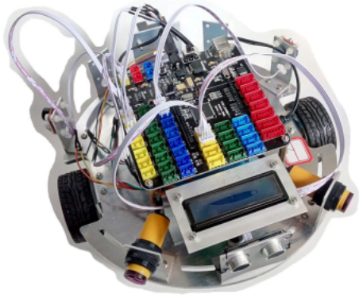
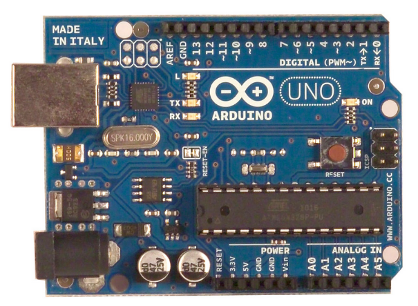
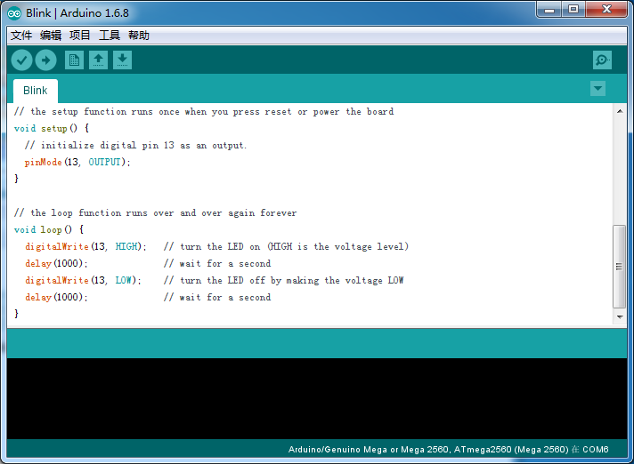
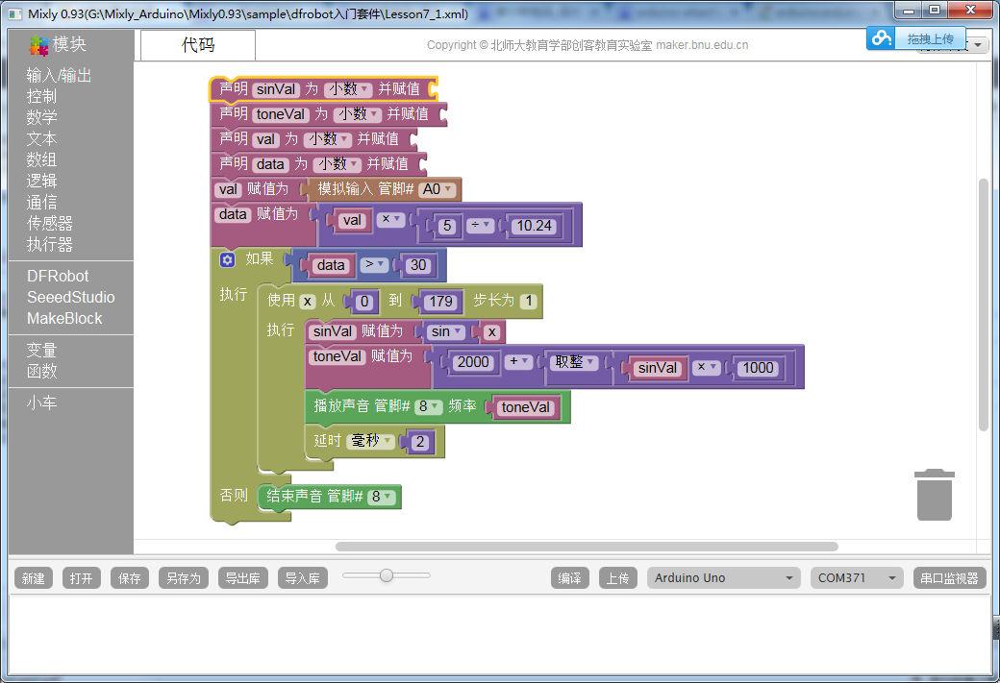

当前页面：>>网站首页>>课程学习
一、机器人课要求和规定
上课期间所有学生必须严格遵守《机器人课程三大纪律》。
- 第一条 注意环境卫生，着装得体，不迟到早退；
- 第二条 严禁在教室就餐、抽烟、打闹、玩游戏等；
- 第三条 按要求操作设备，注意人员和设备的安全。
二、机器人概述
随着工业化以及信息化的进程，机器人已经再不知不觉中融入到了我们的生活和工作当中。那么我们对机器人到底了解多少？
机器人的概念
维基百科：A robot is a mechanical or virtual artificial agent, usually an electro-mechanical machine that is guided by a computer program or electronic circuitry. 百度百科：机器人（Robot）是自动执行工作的机器装置。它既可以接受人类指挥，又可以运行预先编排的程序，也可以根据以人工智 能技术制定的原则纲领行动。它的任务是协助或取代人类工作的工作，例如生产业、建筑业，或是危险的工作。
机器人的发展历史
智能型机器人是最复杂的机器人，也是人类最渴望能够早日制造出来的机器朋友。然而要制造出一台智能机器人并不容易， 仅仅是让机器模拟人类的行走动作，科学家们就要付出了数十甚至上百年的努力。>>点击了解详情
机器人的组成
机器人一般由控制系统、驱动装置、执行机构、检测装置和机械结构等组成部分>>点击了解详情
机器人的分类
诞生于科幻小说之中一样，人们对机器人充满了幻想。也许正是由于机器人定义的模糊，才给了人们充分的想象和创造空间。国际上的 机器人学者， 从应用环境出发将机器人也分为两类：制造环境下的工业机器人和非制造环境下的服务与仿人型机器人，这和中国的分类是一致的。中国的机器人专家从应用环境出发， 将机器人分为两大类，即工业机器人和特种机器人。 工业机器人 所谓工业机器人就是面向工业领域的多关节机械手或多自由度机器人。 特种机器人 特种机器人是除工业机器人之外的、用于非制造业并服务于人类的各种先进机器人，包括：服务机器人、水下机器人、娱乐机器人、军用机器人、 农业机器人、机器人化机器等。 在特种机器人中，有些分支发展很快，有独立成体系的趋势，如服务机器人、水下机器人、军用机器人、微操作机器人等。
三、ETRobot介绍
ETRobot（Engineering training robot）即“工程训练机器人”。是由西南交通大学工程训练中心设计制作的基于MEGA2560的大学生机器人实习实训平台。2015年9月开始设计，2016年3月投入教学。

四、Arduino控制器入门
Arduino是一款便捷灵活、方便上手的开源电子原型平台。包含硬件（各种型号的Arduino板）和软件（Arduino IDE)。由一个欧洲开发团队于2005年冬季开发。

Arduino能通过各种各样的传感器来感知环境，通过控制灯光、马达和其他的装置来反馈、影响环境。板子上的微控制器可以通过Arduino的编程语言来编写程序， 编译成二进制文件，烧录进微控制器。对Arduino的编程是利用 Arduino编程语言 (基于 Wiring)和Arduino开发环境(基于 Processing)来实现的。 基于Arduino的项目，可以只包含Arduino，也可以包含Arduino和其他一些在PC上运行的软件，他们之间进行通信 (比如 Flash, Processing, MaxMSP)来实现。
ArduinoIDE编程
Arduino IDE可以在Windows、Macintosh OS X、Linux三大主流操作系统上运行，而其他的大多数控制器只能在Windows上开发。Arduino IDE基于processing IDE开发。 对于初学者来说，极易掌握，同时有着足够的灵活性。

Mixly图形化编程
Mixly采用了Arduino_IDE自身的编译器，支持所有Arduino主板，优化了类型变量的处理，支持了界面缩放处理，同时加入了DFRobot,Seeedstudio和MakeBlock公司的传感器套装支持， 并且支持了用户自定义函数模块的导入导出功能，使得用户体验 更加方便，其图形设计功能有：
输入输出：数字输入、数字输出、模拟输入、模拟输出、中断控制、移位输出 程序结构：时间延迟、条件执行、循环执行、获取时间、初始化 数学变换：数字映射、数字约束、数学运算、取整、随机、三角函数 文本输出：文本连接、数字转文本 数组列表：定义数组、取数组值、改数组值 逻辑处理：条件判断、逻辑运算 传感模块：超声波、DHT11 执行模块：声音播放、舵机控制 通讯模块：串口通讯、红外通讯、I2C通讯 变量常量：高低、真假、浮点变量、整型变量、布尔变量、字符串变量 函数处理：定义函数、执行函数 第三方扩展：DFROBOT、SEEEDSTUDIO、MAKEBLOCK 主控板选择：当前已经支持官方所有的Arduino主板 其程序处理功能有： 程序编写：用户既可以通过图形化代码编写，也可以直接通过文本编写（编写后图形化代码不会变） 程序编译：用户可以直接通过Mixly完成程序的编译工作 程序上载：用户可以直接通过Mixly完成程序的上载工作 代码保存：用户可以保存、另存和导入图形化代码 界面缩放：用户可以随意控制界面缩放，方便平板用户使用 模块导入导出：用户可以把函数导出成模块，从而方便其它用户导入使用

五、机器人模块学习与编程
模块学习部分转入课堂教学，由老师PPT讲解！
六、实训任务
6.1基础任务
(1)控制两个电机正反转
(2)超声波测距液晶显示
(3)特雷门琴
(4)倒车雷达
6.2发挥任务
做一个智能避障机器人，当前面或者侧面有障碍物的时候有提示，并且自己转弯 行驶避开障碍物，要尽可能的用到所有的传感器（至少有超声波、1602液晶、光电开关、 蜂鸣器）。在不违反课堂纪律的情况下，只要完成该功能的小组，成绩全部得优。
七、测评打分
完成基础任务---及格
完成发挥任务---在及格的基础上根据功能发挥情况加分